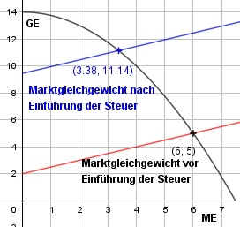

Aufgabe 92 Einige Länder erheben beim Anbieter eine Steuer s auf Luxusartikel. a) Bei welcher Menge liegt das Marktgleichgewicht vor der Einführung der Steuer, wenn die Angebots- funktion A(x) = 0,5x + 2 und die Nachfragefunktion N(x) = -0,25x2 + 14? b) Wie groß ist der Steuersatz, wenn die Steuereinnahme S maximal sein soll? c) Bei welcher Menge liegt dann das Marktgleichgewicht? a) 0,5x + 2 = -0,25x2 + 14 |-0,5x 2 = -0,25x2 - 0,5x + 14 |-2 -0,25x2 - 0,5x + 12 = 0|:(-0,25) x2 + 2x - 48 = 0 p, q - Formel: p = 2, q = -48 x1,2 = x1,2 = -1 ± x1,2 = -1 ± x1,2 = -1 ± 7 x1 = 6 ME A(6) = 0,5 * 6 + 2 = N(6) = -0,25*62 + 14 = 5 GE x2 = - 8 keine Lösung b) Angebotsfunktion mit Steuer: 0,5x + 2 + s 0,5x + 2 + s = - 0,25x2 + 14 s(x) = - 0,25x2 - 0,5x + 12 Steuereinnahmen S(x) = s * x S(x) = - 0,25x3 - 0,5x2 + 12x S'(x) = - 0,75x2 - x + 12 S''(x) = -1,5x - 1 immer < 0 für x > 0 --> Hochpunkt -0,75x2 - x + 12 = 0 |:(-0,75) x2 + (4/3)x - 16 = 0 p, q - Formel: p = (4/3), q = -16 x1,2 = x1,2 = -(2/3) ± x1,2 = -(2/3) ± x1,2 = -(2/3) ± 4,05 x1 = 3,38 ME S(3,38) = -0,25 * 3,383 - 0,5 * 3,382 + + 12 * 3,38 = 18,05 GE s(3,38) = -0,25 * 3,382 - 0,5 * 3,38 + 12 s(3,38) = 7,45 GE/ME c) Neues Marktgleichgewicht: x1 = 3,38 ME A(3,38) = 0,5 * 3,38 + 2 + 7,45 = N(3,38) A(3,38) = -0,25 * 3,382 + 14 = 11,14 GE x2 = -5,38 keine Lösung
